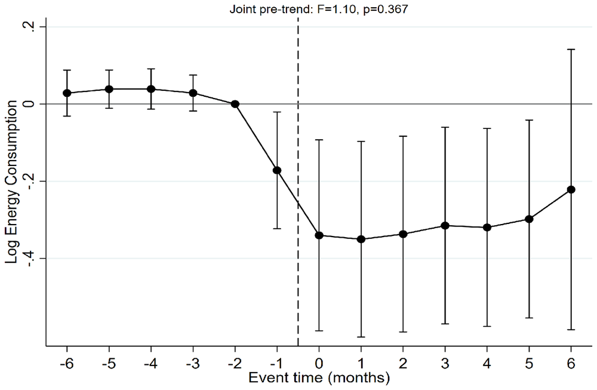
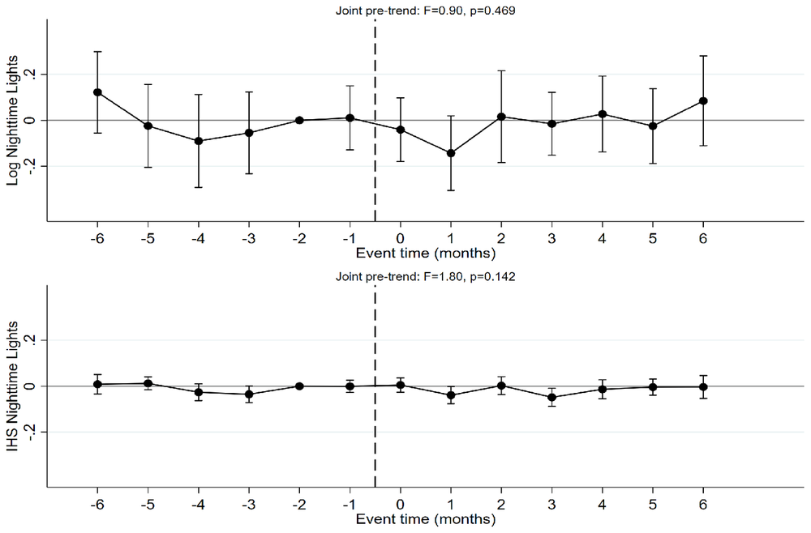

Measuring Local Economic Disruptions
Small tropical storms that never make the news cut local economic activity sharply in Vietnam. Electricity records show the damage clearly. Satellite night-time lights, a popular stand-in for economic data, miss it.
Do “minor” storms cause real economic losses, and can we see them?
Research on storms mostly studies major hurricanes. Weaker storms strike far more often, but they rarely appear in disaster statistics and their effects are local and short-lived. The paper asks how much they cost, and whether common data sources can detect the loss at all.
Three coastal provinces, twelve storms, none hurricane-strength
Thanh Hoa, Nghe An, and Ha Tinh in north-central Vietnam are mostly rural: rice farming, fishing, aquaculture, and small workshops. Between 2012 and 2022, twelve storms of known intensity reached the region, and none reached even Category 1. Many storms in the weather records never appear in the main international disaster database.
Two yardsticks, same places, same storms
We track monthly electricity use in each commune, from the utility's billing records, and compare communes within 15 km of a storm's path with those farther away, before and after each storm. We then run the same test with NASA satellite night-time lights for the same communes and storms.
Electricity fell by 30 percent; the satellite saw nothing
Communes near a storm's path used about 30 percent less electricity over the six months after landfall. The losses were largest in rural, low-consumption communes. Night-time lights showed no detectable average change for the same storms in the same places.


Big losses up close, small on average
Turning the electricity decline into output, a typical storm costs an exposed commune about 3 to 4 percent of a year's output. Averaged across the whole province, the same loss looks like only 0.4 to 0.6 percent. Province-level statistics hide where the damage lands.